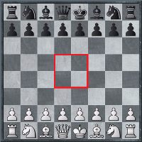

The 1st Stage - The Opening
In modern chess a huge amount of attention is paid to this first stage of the game. In fact, most GMs spend more than 90% of their study-time on openings. The reason why the openings are considered so important is because you can lose the game before even getting out of the opening stage if you don't have a good understanding of what are the most important points to accomplish during this stage. The development of your pieces and gaining control over the center of the board should be the only priority for the players in the first few moves.
Studying all chess openings is an impossible task in a human lifetime. There are simply too many of them, and no one person, not even the great Garry Kasparov, is equally good in every one of those openings. What strong players do is take a few openings, which are closer to their taste and character in nature, and study those openings in depth building what is called a chess repertoire for themselves. I believe that this is what everyone should do, because you will always benefit more if you constantly play the same few openings over a long period of time (after which you can choose to switch to another set of openings), than if you keep exploring more and more of them. For one thing you will become a better positional play, which in turn will give you better chances when playing unfamiliar-to-you openings, and also, since you have spent months and years on the same opening, going as deep as maybe 20, 30 moves, you will gain the ability to draw other players into playing your game, convert their openings to more familiar positions for your eye.
 At the beginning of the game both players strive to gain control over the four central squares of the board. This is a very important area to at least have leverage on (if not to control it entirely) to secure the proper development of your pieces, and launch successful attacks later on in the game. When you yield the center to your opponent, pretty soon you find out that there isn't enough room for your pieces to proceed with a healthy development so either your pieces start to cluster-up on the flanks, or they won't be able to get out from the back rank. Having your pieces trapped in the back rank creates huge problems in defense, because when you have pieces stuck on the back rank, then your king is also stuck in the middle of the board because it cannot castle, and that is bad news for your king. It is mainly this handicap of mobility that creates all the other problems when the central squares of the board are dominated by your opponent.
It should not be surprising to you then, if I say that the most popular, and perhaps the most beneficial and productive first moves are those that either occupy one of the central squares, or target them. Hence, 1.e4 ..., 1.d4 ..., 1.Nf3 ..., 1.Nc3 ..., etc. are all great moves, while 1.a4 ..., or 1.h3 ... are a lot more passive moves, and do not accomplish much. At the very beginning black also has many choices to reply to white's first move. But again, the most successful response will be to get in the action right from the beginning with a move like 1... d5, or 1...Nf6.
For a long time chess was played in a very romantic way: developing certain pieces only, and rushing to unsupported attacks; opening up one of the flanks entirely without developing a piece from the other flank; making many unnecessary, repetitive moves and losing tempo; etc. It wasn't until mid-nineteenth century when chess players cooled down, and took a scientific approach to the game, analyzing lines of openings and cataloging them.
Chess opening have interesting names: King's Indian Defense, Queen's Gambit, Semi-Slav, Caro-Slav, Caro-Kann, Alekhine's Defense, The English Game, Sicilian Defense, Ruy-Lopez, etc. Many of the eariler catalogued openings are named after the region in which they were played most, or originated from. Later on, especially starting from the beginning of the twentieth century, when many brilliant GMs emerged in Europe, the players who took the traditional openings and extended the analyzed lines got their names attached to those openings. For example, Caro-Kann Tal Variation (Named after the 8th World Champion Mikhail Tal). In addition, many new openings were carefully analyzed by strong GMs, and these openings got their names from their creators: Alekhine's Defense, Ruy-Lopez, etc.